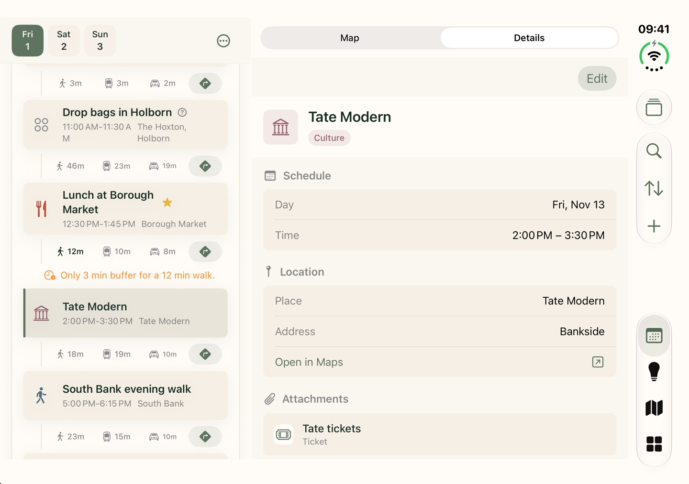

See the day on a map
Keep activities, stays, transport, and notes in one itinerary. Save places as ideas until you know where they fit.
Trip planner for iPhone and iPad
Avenly flags overlapping plans and tight gaps between stops as you build your itinerary.
Download on the App StoreFree to download and view trips. Unlock full planning with a one-time purchase. No subscription.

Keep activities, stays, transport, and notes in one itinerary. Save places as ideas until you know where they fit.
Use Make Available Offline before you leave to prepare maps and trip documents for when you lose signal.
Sync with iCloud and invite others to view the trip or edit it with you.
Export your itinerary as Markdown and ask your preferred AI assistant whether a day feels rushed.